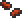

Fireblossom Seeds
| Fireblossom Seeds | |
|---|---|
|  | |
| Statistics | |
| Type | Seed |
| Max stack | 99 |
| Use time | 14 |
| Sell | 16 |
Fireblossom Seeds can be obtained by harvesting Fireblossom while it is blooming. A Fireblossom plant only blooms when it is in lava. An easy way to procure your initial seeds in the Underworld is to place blocks two high on either side of the plant, then pour a Lava Bucket into the gap submerging the Fireblossom in lava. At this time it will drop 1-3 Fireblossom Seeds.
Alternatively, after placing the blocks on either side, place one Hellstone block directly above the plant. Mine this away and it will spawn lava, causing the plant to bloom. To avoid accidentally cutting the plant while mining the Hellstone, stand atop the Hellstone itself while mining it. This method has the benefit of only requiring resources players are likely gathering already while in the Underworld, freeing up one inventory space that would otherwise hold a Bucket.
Fireblossom Seeds can be placed in empty Clay Pots or on Ash Blocks and grown into additional, harvestable Fireblossom. Potted Fireblossom will grow anywhere, not just in the Underworld, but will only yield seeds when submerged in lava.
Like the Fireblossom, this item is immune to lava despite not being of blue quality.
History
| Seeds |
|---|
| Acorn Corrupt Seeds Grass Seeds Hallowed Seeds Jungle Grass Seeds Mushroom Grass Seeds Blinkroot Seeds Daybloom Seeds Deathweed Seeds Fireblossom Seeds Moonglow Seeds Waterleaf Seeds |